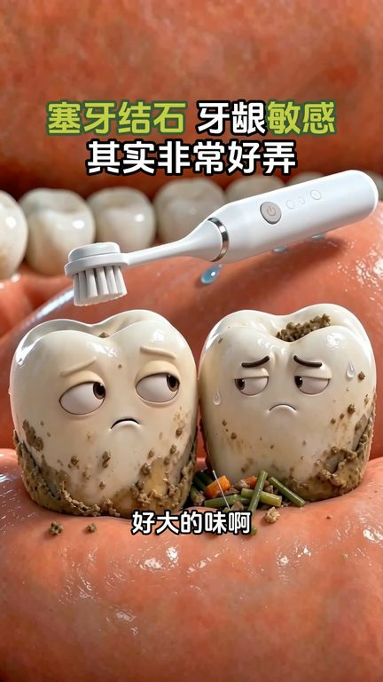
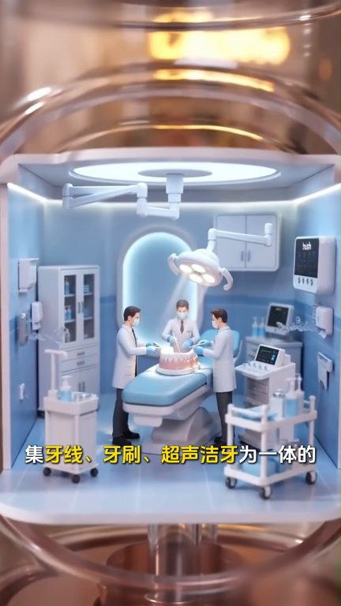
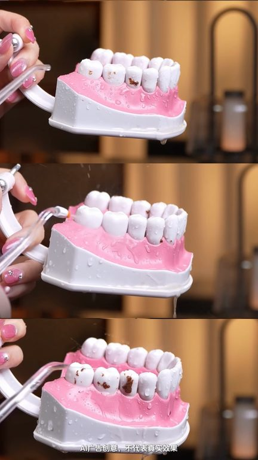

TOP 1 · 代表素材深度拆解
核心放量 稳健
视频为原始素材 HTTPS 链接；点击后加载，建议在网络环境良好时播放。
20.0万素材消耗
1.74%CTR
30.6%类目消耗占比
-0.28pp较类目均值
表现判断
该素材是类目内第 1 名，属于“核心放量”；CTR 低于类目均值。消耗体现承接规模，CTR 体现首屏与定向效率，两项应结合判断，不能仅以单指标下结论。
表达标签
口播三段式证据
开场钩子别拔了都臭了还是等它来吧好大的味啊快使劲刷刷又塞牙了知道了别停啊里面还卡着呢那地方我构不到啊这什么高压水枪啊我的牙银好痛痛啊都流血了
中段论证今年都不流行用牙线牙刷充牙器了现在都流行用极牙线电动牙刷掏声劫牙为一体的牙齿协修新一代C50小光环充牙器能消散难闻味道能充劫时能深入牙缝包括刷毛护不到的残渣和军班真的非常非常的好用我上哪儿都必须带着它不提这份国际医疗气泄安全证书有多珍贵自升级以来就火爆外网靠的就是这个院线超声洗同源科技能产生无数颗顺势超声微气泡
结尾转化五倍瓦解顽固牙垢和食物残渣牙卷单清洁率高达99%一键升级最高岗位老公的成年牙垢都能撼动升级稳压护瘾黑科技创新十党精细模式和冰牙酸质印牙软换剂牙敏感的姐姐她就是你的救星是你全家的口腔管家不想牙缝变大牙萤后退趁现在优惠还在不妨入手试试
有效点
- 消耗占比 30.6% 说明具备投放承接能力，但 CTR 较类目均值低 0.28pp
- 口播包含明确到手机制或直播间指令，转化路径较完整
迭代动作
- 保留当前高效钩子，复制 3 个变量版本：人物、首句和首帧分别单变量测试
- 中段每 5–8 秒补一次画面变化或证据点，避免同景口播造成信息疲劳
- 复核功效、绝对化及价格稀缺措辞；增加适用边界和效果因人而异提示
合规关注

钩子建立 · 2.8s

场景/问题展开 · 20.9s

卖点证据 · 48.1s
转化收口 · 66.2s
查看完整口播摘要
别拔了都臭了还是等它来吧好大的味啊快使劲刷刷又塞牙了知道了别停啊里面还卡着呢那地方我构不到啊这什么高压水枪啊我的牙银好痛痛啊都流血了没用的看我的吧今年都不流行用牙线牙刷充牙器了现在都流行用极牙线电动牙刷掏声劫牙为一体的牙齿协修新一代C50小光环充牙器能消散难闻味道能充劫时能深入牙缝包括刷毛护不到的残渣和军班真的非常非常的好用我上哪儿都必须带着它不提这份国际医疗气泄安全证书有多珍贵自升级以来就火爆外网靠的就是这个院线超声洗同源科技能产生无数颗顺势超声微气泡五倍瓦解顽固牙垢和食物残渣牙卷单清洁率高达99%一键升级最高岗位老公的成年牙垢都能撼动升级稳压护瘾黑科技创新十党精细模式和冰牙酸质印牙软换剂牙敏感的姐姐她就是你的救星是你全家的口腔管家不想牙缝变大牙萤后退趁现在优惠还在不妨入手试试